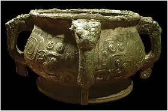

|
In Shang times the only writing that might be seen on a bronze vessel was a mark of ownership or a short inscription giving the name of the ancestor. During the Western Zhou dynasty inscriptions on the ritual vessels became much longer. The inscriptions played an important part in the ancestor ritual. At a ritual ceremony food and drink would be placed in the bronze vessels for the ancestor. From the spirit world the ancestors would see the inscription at the bottom of the vessel and could read it. A vessel could be inscribed after the owner had received an appointment or present from the king. The inscription would mention the present or job the owner had received. It would honour the king and then honour the ancestors. The ancestors could read about the owner's good deeds. They could also see that the owner showed proper respect for them. This gui is one of the most famous inscribed vessels outside China. Look inside to see what is written.

Click on the gui to look at the inscription.
Xing Hou Gui |